Project
Internship Project
SME GTM & Business Management · Telkomsel
Built and maintained dashboards and created automation workflows.
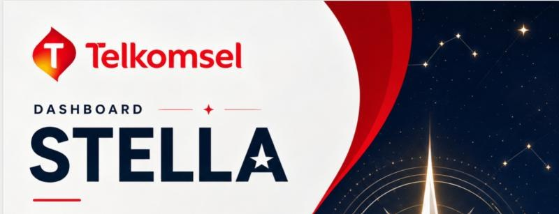
STELLA Dashboard
Created and maintained a dashboard to track KPIs for all SME Account Managers.
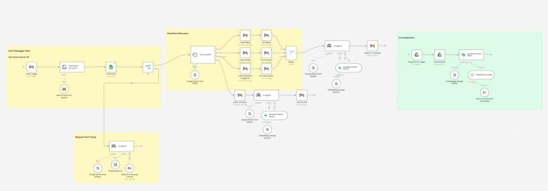
n8n Automation Workflow
Designed an AI Agent workflow integrating 5 operational SOPs across 5 business divisions, automating issue classification and PIC routing.
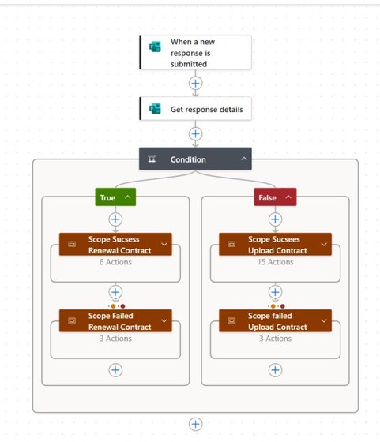
Automated Contract Renewal
Built a workflow for expired contracts that removes manual renewal work for Account Managers.
Business Intelligence · Project-based internship
Sales Retention Gap
The project investigates declining sales and low repeat-purchase frequency to uncover business performance gaps and support data-driven decisions.
SQL · Google BigQuery · Google Looker Studio
October to November 2025
Developed an interactive sales dashboard using SQL to analyze sales performance, customer behavior, and product trends. Identified a 7.8% revenue decline and low repeat purchases, then proposed retention strategies, churn prediction, and product diversification to support growth.
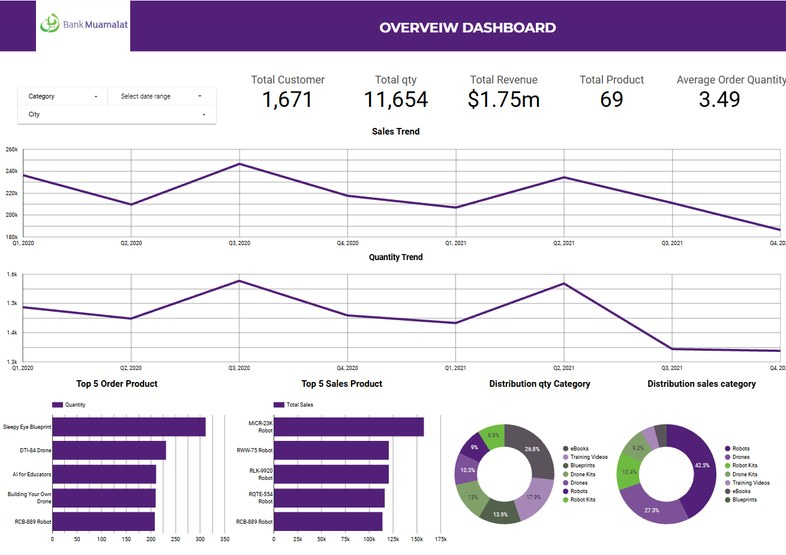
Startup Project
Starticas · Founder
Led a team of 20 building social-impact products from research to pitching.
Alitnest
Led the project end to end, running primary research with 300+ respondents to validate business and social-impact solutions. Reached an 80% partnership pitch success rate and secured expressions of interest from 3 external organizations.
Little Steps
Led the team in Hackathon 2024 and the Google Solution Challenge, focused on the SDGs and public health. Selected for incubation at Bandung Techno Park (Ministry of Cooperatives).
Selected Project
Sales Analyst Project
Pipeline Reporting Gaps
Analyzed sales performance to identify revenue discrepancies, regional performance gaps, and opportunities to improve pipeline management.
Excel · Google Looker
Developed a sales performance dashboard to monitor revenue, closed-won deals, and regional performance. Identified a gap of approximately IDR 0.7 billion between revenue and closed-won figures, alongside underperforming regions. Recommended pipeline synchronization, contract digitalization, and focused follow-ups on high-potential opportunities.
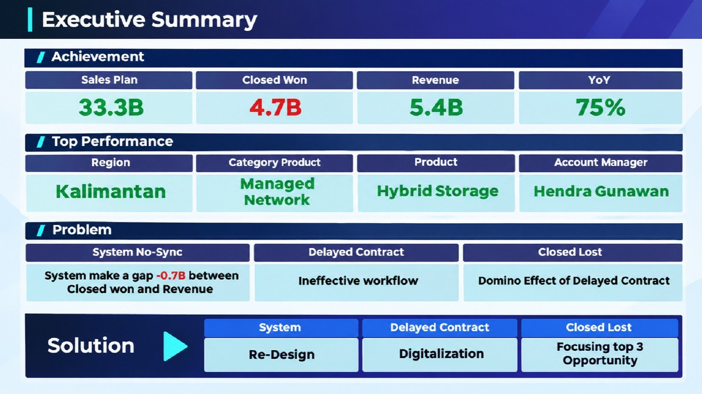
Olist Brazilian Marketplace
Fragmented Marketplace Data
Consolidated transaction data to evaluate sales performance, customer behavior, seller contributions, and delivery reliability.
Google BigQuery · Google Looker Studio
Built a consolidated analytical dataset using BigQuery and an interactive Looker Studio dashboard to assess sales, customer behavior, seller performance, and logistics. Analyzed 98.2K orders generating 16.6M in revenue, with a 98.2% delivery success rate and an average delivery time of 12.42 days. Identified opportunities to improve logistics efficiency, diversify revenue sources, and strengthen seller performance.
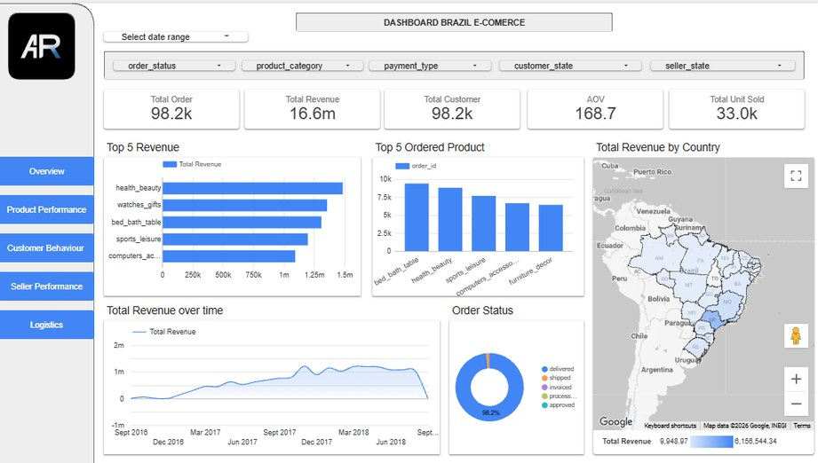
Academic Project
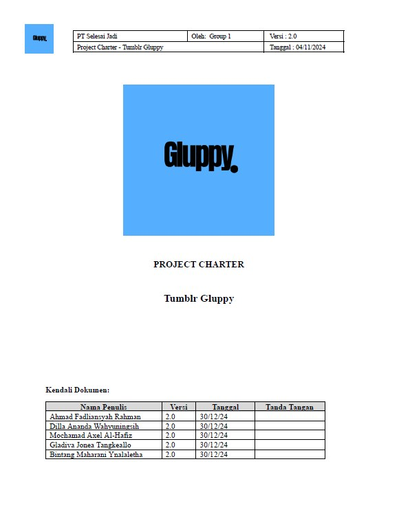
Project Management
Created a project charter for Gluppy, a smart tumbler idea that tracks drink temperature, type, and daily intake.
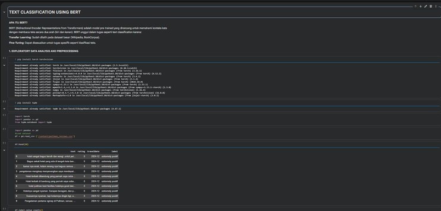
Big Data and Analytics
Sentiment analysis of Pullman Bandung using TripAdvisor reviews as the data source.
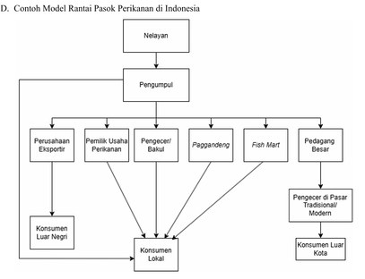
Supply Chain Management
Analysis of the fisheries supply chain in Indonesia.
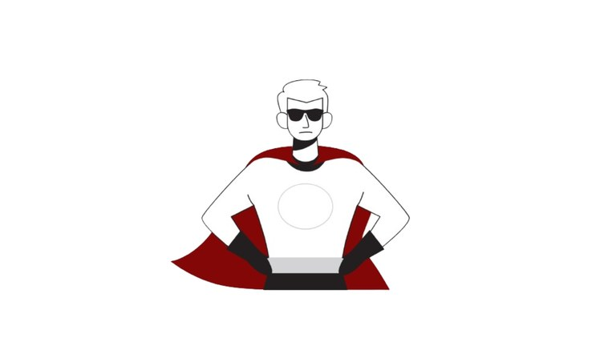
Design Thinking
Created H.E.R.O, a smart IoT-based security solution that improves the safety of rental homes, especially those occupied by university students.
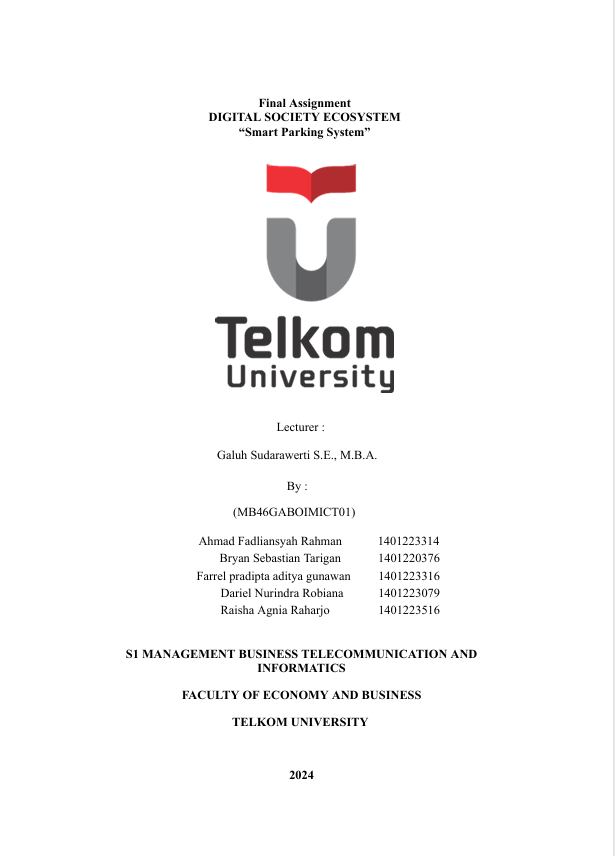
Ecosystem Digital Society
Smart Parking System for Telkom University in order to solve the parking problem and inefficiency of resources in Telkom University area
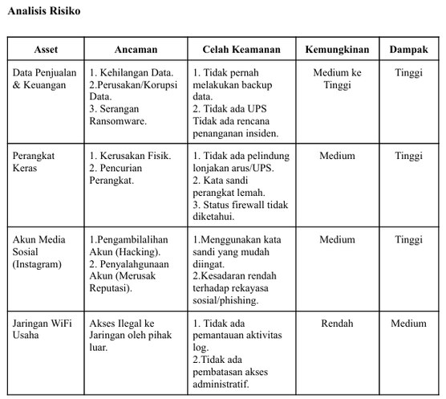
Cyber Security
Assessed SMEs’ information security using the PAMAN KAMI index and the NIST Framework.